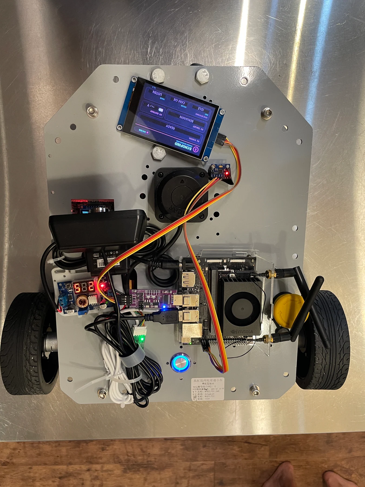
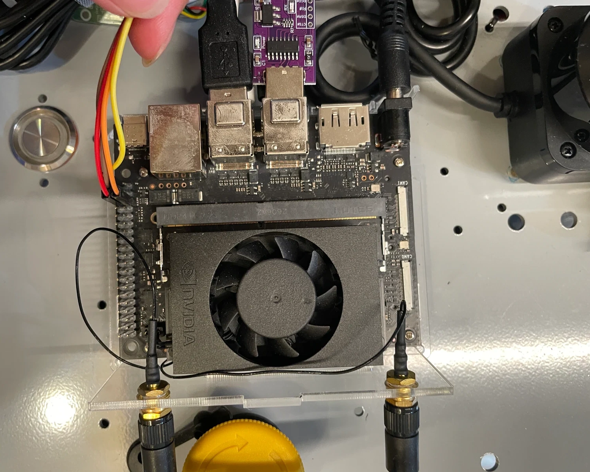
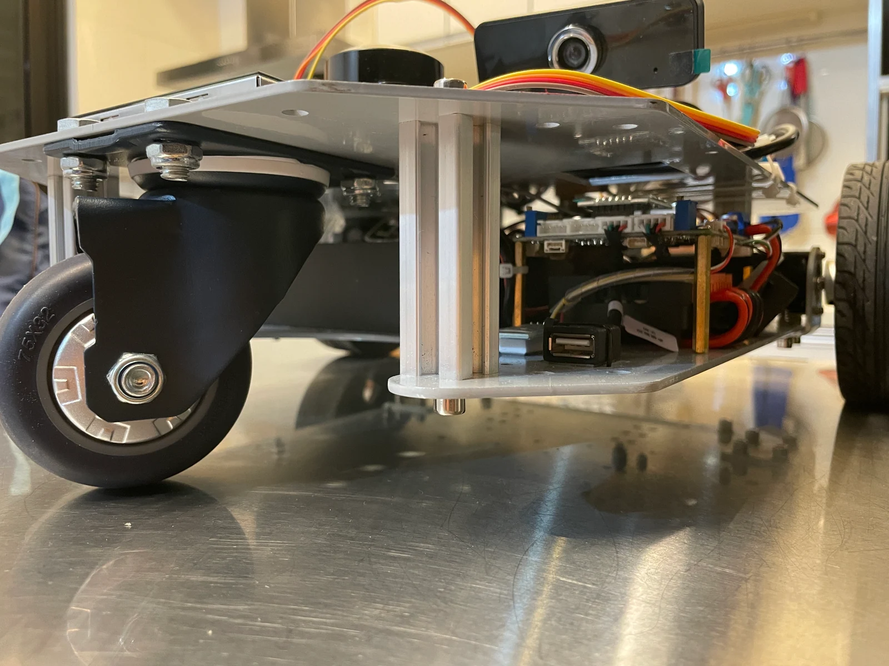

Drivetrain
Two-wheel differential drive
24V / 60W geared motors · AB encoders
AMR / Independent development platform
My 24V differential-drive platform.
Assembled. Joystick-controlled. Still evolving.



01 / Inside the system
A functional schematic of the platform.
Dashed components remain in development.
Two-wheel differential drive
24V / 60W geared motors · AB encoders
Motor and encoder integration
Proportional speed control · Joystick commands
8GB · Ubuntu · ROS 2 Humble
LiDAR · Camera / YOLO · SLAM
Localization · Nav2 · Obstacle avoidance

02 / What’s built
I assembled the platform as a reusable base for sensors, perception models, and mechanisms. Power, embedded control, compute, and communication have to work together.
The base is drivable. Advanced sensing and autonomous navigation are still being integrated and tested.